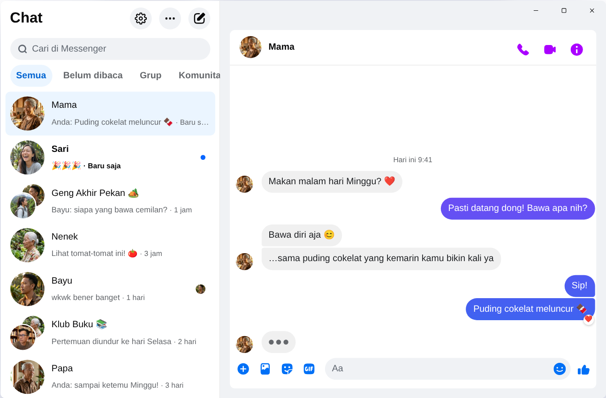

Chatpane / Windows
Diperbarui November 2026
Cara pakai Messenger di laptop dan PC tahun 2026
Meta menghentikan aplikasi Messenger untuk Windows pada 15 Desember 2025, dan messenger.com sekarang mengarahkan kamu ke Facebook. Ini cara yang masih berfungsi di laptop atau PC dengan Windows 10 atau 11.
Gratis dan open source · Windows 10 dan 11 · Bukan aplikasi buatan Meta
Jawaban singkat
Aplikasi Messenger resmi untuk laptop dan PC sudah tidak ada. Meta menghapusnya dari Microsoft Store, dan sejak April 2026 Messenger di komputer hanya bisa dibuka lewat facebook.com/messages, di dalam Facebook.
Kalau kamu ingin Messenger punya jendela sendiri, tanpa beranda dan Reels, Chatpane adalah aplikasi gratis dan open source untuk Windows yang hanya menampilkan chat kamu. Ini proyek independen, bukan buatan Meta.
Kenapa tutorial lama sudah tidak berlaku
Banyak tutorial masih menyuruh mencari "Messenger" di Microsoft Store, atau mengunduh installer Messenger 2250.1 dari situs download. Cara itu sudah tidak berguna: itulah aplikasi yang dihentikan Meta pada Desember 2025, dan saat dibuka hanya mengarahkan kamu ke Facebook.
Jangan juga memasukkan password Facebook ke aplikasi atau situs yang tidak jelas asalnya. Kalau ada yang menawarkan "Messenger untuk PC" dengan halaman login sendiri, hati-hati.
Apa yang terjadi dengan Messenger untuk Windows?
Pada 2024, Meta mengganti aplikasi Windows dengan versi web yang dikemas. Pada Oktober 2025, Meta mengumumkan penghentiannya dan menghapusnya dari Microsoft Store, lalu sejak 15 Desember 2025 aplikasi itu berhenti berfungsi. Pada April 2026, messenger.com juga ditutup. Detail dan tanggalnya ada di Messenger desktop dihentikan.
Pilihan kamu
Cara pakai Messenger di Windows
Chatpane di Windows
Chatpane membuka Messenger yang sama dengan yang kamu lihat di browser, jadi semua chat, grup, panggilan, dan foto tetap ada dan tersinkron dengan HP kamu. Yang dibuang hanya bagian Facebook lainnya.
- Hanya Messenger. Beranda, Reels, Marketplace, dan pencarian Facebook disembunyikan.
- Notifikasi yang praktis. Balas, beri reaksi, tandai sudah dibaca, atau bisukan chat langsung dari notifikasi, tanpa membuka jendela. Cocok kalau kamu jualan lewat Facebook dan tidak mau pembeli menunggu.
- Taskbar dan system tray. Jumlah pesan belum dibaca di ikon, terbuka otomatis bersama Windows, dan tetap berjalan di system tray saat jendela ditutup.
- Privasi. Sembunyikan status sedang mengetik, sembunyikan nama dan foto profil saat berbagi layar, dan blokir permintaan analitik Facebook (aktif secara bawaan).
- Bahasa Indonesia. Chatpane mengikuti bahasa komputer kamu, jadi menu dan pengaturannya tampil dalam bahasa Indonesia.

Cara instal
- Download installer untuk Windows. Kalau laptop kamu memakai prosesor ARM, pakai installer ARM64.
- Buka file-nya. Installer Chatpane untuk Windows belum punya tanda tangan digital, jadi SmartScreen mungkin menampilkan "Windows melindungi PC Anda". Klik "Info selengkapnya", lalu "Tetap jalankan". Download Chatpane hanya dari chatpane.app atau GitHub.
- Masuk dengan akun Facebook yang biasa kamu pakai. Chat kamu langsung muncul.
Tidak mau instal? Versi portable (.zip) bisa dipakai tanpa installer.
Tanya jawab
Pertanyaan soal Messenger di PC
Apakah Chatpane gratis?
Ya. Tidak ada biaya, langganan, maupun iklan. Chatpane open source dengan lisensi MIT, dan kodenya terbuka di GitHub sehingga siapa pun bisa memeriksanya.
Apakah ini aplikasi Messenger resmi?
Bukan. Chatpane adalah proyek independen yang tidak berafiliasi dengan Meta. Aplikasi ini menampilkan Messenger asli dari facebook.com/messages di jendelanya sendiri, jadi pesan kamu tetap lewat Messenger dan ketentuan Meta tetap berlaku.
Bisa dipakai tanpa akun Facebook?
Tidak. Sejak April 2026, Meta hanya mengizinkan Messenger tanpa akun Facebook di aplikasi HP. Di komputer, Chatpane dan semua cara lain butuh akun yang bisa masuk ke facebook.com.
Apakah jalan di Windows 10?
Ya, di Windows 10 dan 11. Chatpane memakai Microsoft Edge WebView2, yang sudah ada di Windows 11. Di Windows 10, installer akan mengunduhnya kalau belum ada.
Bisa video call?
Bisa. Ini Messenger lengkap, jadi panggilan suara dan video terbuka di jendela sendiri, sama seperti di facebook.com.
Dapatkan Chatpane
Gratis dan open source. Terunduh dalam hitungan detik - ukurannya cuma sekitar 4 MB.
Juga tersedia: .zip portabel · ARM .exe · ARM .zip
Mac Intel lama? Intel .dmg
Daftar lengkap beserta checksum ada di
GitHub
- atau brew install --cask kristofferR/tap/chatpane